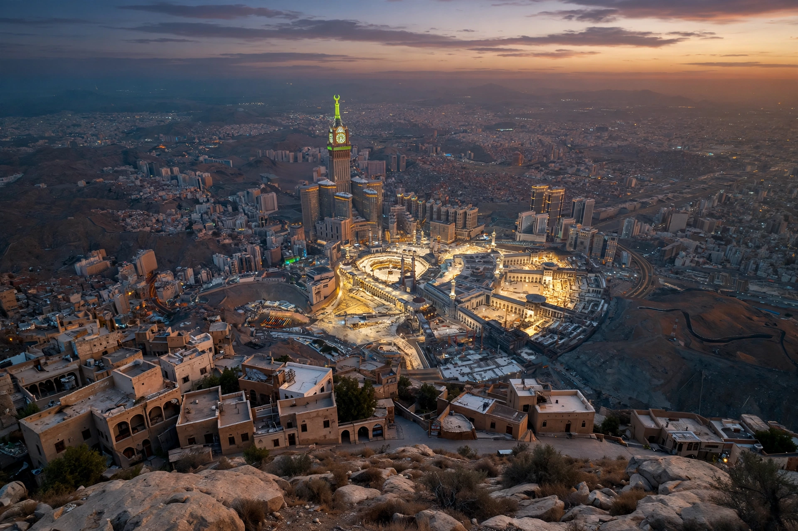

Banu Hashim

| Banu Hashim | |
|---|---|
| Arabic | بنو هاشم (Banū Hāshim) |
| Parent tribe | Quraysh |
| Location | Mecca, Hejaz |
| Eponymous ancestor | Hashim ibn Abd Manaf |
| Notable members | Muhammad, Ali ibn Abi Talib, Abd al-Muttalib, Abbas ibn Abd al-Muttalib |
| Descendant houses | Hashemites of Jordan/Hijaz; Abbasid caliphs; Alids; Sharifs of Mecca |
Banu Hashim (Arabic: بنو هاشم, "sons of Hashim") is a clan of the Quraysh tribe of Mecca, named for Hashim ibn Abd Manaf, the great-grandfather of the Islamic prophet Muhammad. Members of the clan are called Hashemites, and — as descendants of Muhammad's family — Hashemite lineages have held religious prestige and political power throughout Islamic history.
Pre-Islamic history
Hashim ibn Abd Manaf was a leading Meccan merchant credited with organising the Quraysh's winter and summer trade caravans to Yemen and Syria and with providing food and water (siqaya and rifada) to pilgrims at the Kaaba. His son, Abd al-Muttalib — Muhammad's grandfather — succeeded to these offices; the clan's rivals within Quraysh were the Banu Abd Shams, ancestors of the Umayyads, a rivalry that later shaped early Islamic politics.
In early Islam
Muhammad was born into Banu Hashim around 570 CE, and after his prophetic mission began the clan — including members who did not accept Islam, such as his uncle Abu Talib — largely protected him under tribal obligation. In response, the other Meccan clans imposed a boycott on Banu Hashim (and the allied Banu Muttalib) c. 616–619, confining them to the quarter of Abu Talib. After the Hijra to Medina, the clan provided many of Islam's central figures: Muhammad's cousin and son-in-law Ali ibn Abi Talib, his uncle Abbas (ancestor of the Abbasid caliphs), and the Prophet's descendants through Fatima and Ali, who hold a special status in both Sunni and Shia Islam; the Shia imams are Hashemites of the Alid line.
Later Hashemite dynasties
Hashemite families ruled as Sharifs of Mecca for roughly a thousand years until 1925. Hussein bin Ali, Sharif of Mecca, proclaimed the Arab Revolt in 1916; his sons became kings of Iraq (Faisal I), Jordan (Abdullah I) and briefly Syria. The Hashemite Kingdom of Jordan's royal house remains a Banu Hashim lineage. The Abbasid Caliphate (750–1258) also claimed Hashemite descent through Abbas ibn Abd al-Muttalib.